.png)
[5663] 해외주식 빠른호가주문
원스톱 주문,
기회 포착과 체결을 한순간에!
[5663] 해외주식 빠른호가주문은 빠른 대응이 요구되는 해외 주식 거래에서 속도와 정확성을 동시에 확보할 수 있는 실전형 주문 도구입니다.
미국, 홍콩, 일본 등 주요 거래소의 호가 흐름과 체결 상황을 실시간으로 확인하며, 클릭 한 번에 매수·매도 주문을 접수하고 드래그만으로 정정 · 취소도 신속하게 실행할 수 있습니다.
주문 수량은 사전에 설정해두고 클릭만으로 입력할 수 있어 편리하며, 잔고와 체결 내역도 동일 화면에서 함께 관리할 수 있어 주문의 속도감과 효율성을 더욱 높여줍니다.
실행은 빠르게, 판단은 정확하게!
이 화면이 실전 거래에 강한 이유!
| 기능 | 이런 점이 좋아요 |
|---|---|
| 간편한 클릭 주문 | 더블클릭 또는 원클릭으로 주문 가능 |
| 단축키 주문 기능 | 반복 주문도 키보드 단축키로 빠르게 처리 |
| 직관적인 잔고 평가 | 보유잔고의 평가금액, 평가손익을 거래 통화와 원화 두 가지로 제공 |
| 잔고 · 체결 통합 관리 | 주문 후 잔고, 체결 내역, 수익률을 한 화면에서 확인 |
해외투자로 빠른 한 걸음을 내딛기 위한,
01 주문 전 준비
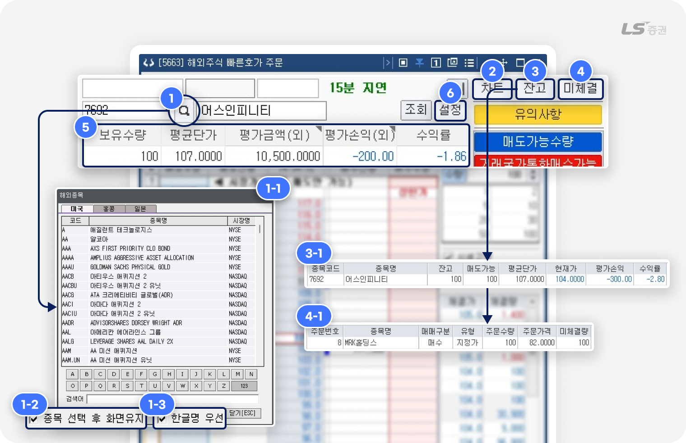
-
1
종목 선택
- 버튼 클릭 시 팝업(1-1번)에서 주문 종목을 선택할 수 있습니다.
- '화면유지'(1-2번) 체크 시, 종목 선택 후에도 종목 검색 팝업이 닫히지 않고 유지됩니다.
-
‘한글명 우선’(1-3번) 체크 시, 종목명을 한글로 표시할 수 있는 경우 종목명이 원래의 명칭 대신 한글로 표시됩니다.
(예 : 검색어 ‘애플’로 코드 ‘AAPL’인 종목 검색 시, 한글명 우선 적용인 경우 '애플', 미적용인 경우 ‘APPLE INC’로 표시)
-
2
해외주식 차트
- [4092] 해외주식 차트에서 선택 종목의 상세 차트 정보를 확인할 수 있습니다.
-
3
잔고 조회
- 보유중인 해외주식 잔고(3-1번)를 확인하고, 해당 종목을 주문화면에서 조회할 수 있습니다.
-
4
미체결 주문 조회
- 미체결 해외주식 주문 현황(4-1번)을 확인하고, 해당 종목을 주문화면에서 조회할 수 있습니다.
-
5
보유잔고 평가금액 조회
- ‘평가금액’ 또는 ‘평가손익’ 항목 클릭 시, 외화 기준, 원화 기준 중 잔고 표시 방법을 전환할 수 있습니다.
-
6
주문 설정
- 해외주식 주문 관련 상세 설정을 할 수 있습니다.
참고해주세요!
- [5663] 해외주식 빠른호가 주문 화면에서 제공되는 평균단가, 평가금액, 평가손익, 수익률은 수수료 및 제세금을 고려하지 않고 주문/체결 데이터만을 기반으로 실시간 계산하여 제공됩니다.
- 실제 매매 시 주문금액과 실현손익은 표시된 금액과 다를 수 있으며, [6007] 해외주식 손익 혹은 [6008] 해외주식 잔고/예수금 화면에서 보다 정확한 손익 및 잔고 정보를 확인할 수 있습니다.
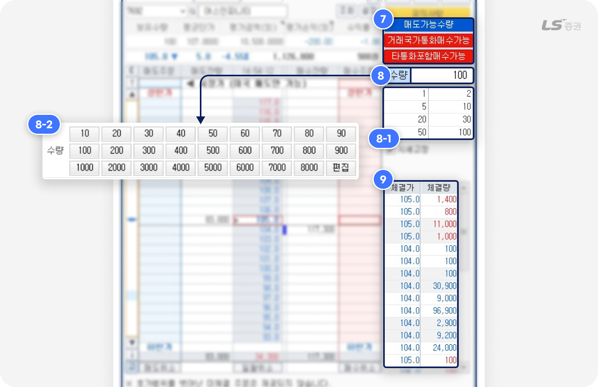
-
7
주문가능수량 입력
- 매도가능수량 : 클릭 시 조회중인 종목의 보유 잔고 중에서 매도 가능한 수량이 주문수량(8번)에 입력됩니다.
- 거래국가통화매수가능 : 클릭 시 조회중인 종목의 거래국가 통화에 해당하는 보유 예수금으로 매수 가능한 수량이 주문수량(8번)에 입력됩니다.
- 타통화포함매수가능 : 클릭 시 보유한 전체 외화 예수금으로 매수 가능한 수량이 주문수량(8번)에 입력됩니다.
-
8
주문수량 입력
- 수량을 직접 입력하거나, 빠른 수량 버튼(8-1번)을 클릭하여 사전에 주문수량을 설정합니다.
- 빠른 주문수량은 버튼(8-1번) 클릭 후 최대 8개까지 직접 편집할 수 있습니다.
- ‘수량’ 버튼 클릭 시 팝업(8-2번)에서 사전 지정된 수량을 선택하여 주문수량을 입력하거나, ‘편집’ 버튼으로 수량을 직접 설정할 수 있습니다.
-
9
체결량 정보 조회
-
체결이 발생할 때마다 체결가와 체결량이 업데이트됩니다.
(지연 시세 이용 시 15분 전 추이를, 실시간 시세 이용 시 실시간 체결 정보를 조회할 수 있습니다.)
-
체결이 발생할 때마다 체결가와 체결량이 업데이트됩니다.
👉 드디어 기본적인 설정을 마무리하고, 다음 단계에서 실제로 주문을 진행해 보겠습니다.
클릭으로 눈 깜짝할 사이 끝나는,
02 매수/매도 주문하기
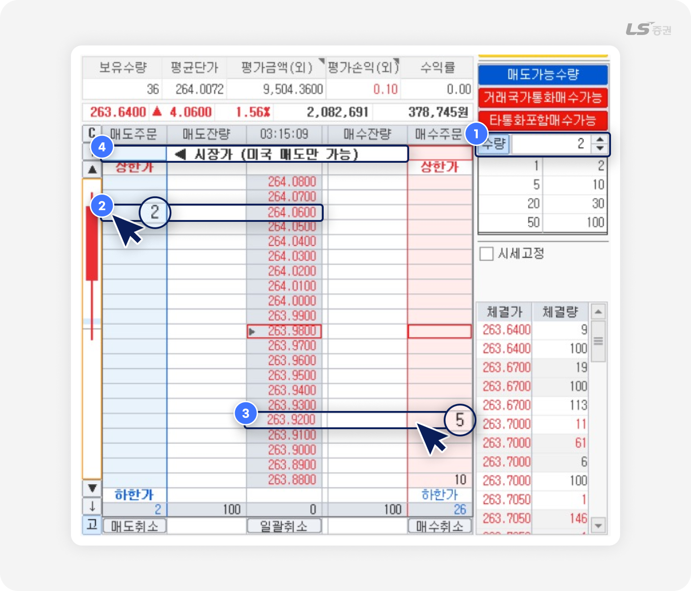
-
1
주문수량 설정
- 매수/매도하려는 주문수량을 입력합니다.
-
2
매도 클릭 주문
- 원하는 호가의 좌측 매도주문 영역을 더블클릭하면 주문이 접수됩니다.
- 주문이 접수되면 매도주문 영역에 해당 호가의 누적 미체결 수량이 표시됩니다.
-
3
매수 클릭 주문
- 원하는 호가의 우측 매수주문 영역을 더블클릭하면 주문이 접수됩니다.
- 주문이 접수되면 매수주문 영역에 해당 호가의 누적 미체결 수량이 표시됩니다.
-
4
시장가 클릭 매도 주문
- 미국 주식의 경우, 매도시장 좌상단의 매도주문 영역을 더블클릭하면 시장가에 매도 주문이 접수됩니다.
클릭 한 번으로 더 빠르게 주문하는 방법
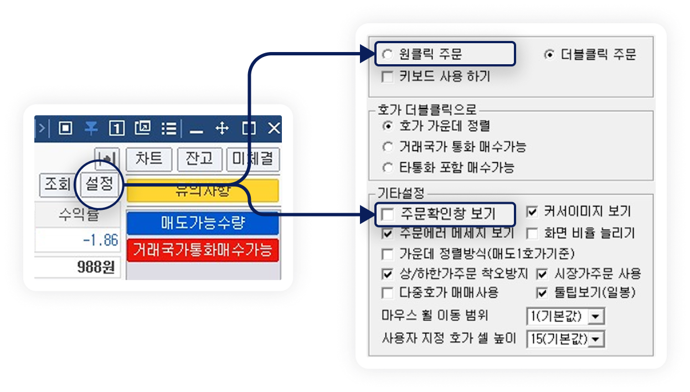
- 설정 버튼에서 ‘원클릭 주문‘을 선택하면, 마우스를 한 번만 클릭하는 원클릭으로 주문을 접수할 수 있습니다.
- 설정 버튼에서 '주문확인창‘ 체크를 해제하면 호가창 클릭 시 주문확인창 없이 주문이 즉시 접수됩니다.
주의하세요!
- ‘주문확인창 보기’ 체크를 해제하면 확인 절차를 생략하기 때문에 되돌릴 수 없는 주문 실수가 발생할 수 있습니다. 이 점에 유의하여 신중히 설정해 주세요.
주문은 기본, 정리도 눈보다 손이 빠르다
03 정정/취소 주문하기
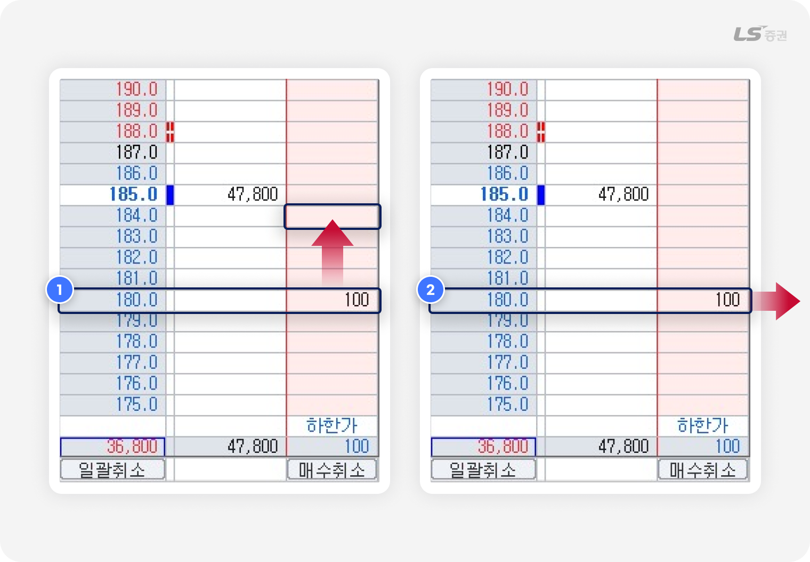
-
1
드래그하여 주문 호가 정정
- 주문 호가 측면의 주문영역 수량을 클릭한 채 드래그해서 정정 호가로 이동합니다.
- 팝업창에서 해당 주문의 정정 정보를 확인한 후 ‘정정주문’ 버튼을 클릭하면 주문이 정정됩니다.
-
2
화면 밖으로 드래그하여 주문 취소
- 주문 호가 측면의 주문영역 수량을 클릭한 채 화면 영역 밖으로 드래그합니다.
- 팝업창에서 해당 주문의 취소 정보를 확인한 후 ‘취소주문’ 버튼을 클릭하면 주문이 취소됩니다.
주의하세요!
- 미국 주식만 정정주문을 접수할 수 있습니다.
- 홍콩, 일본 주식은 정정주문을 접수할 수 없고, 주문 취소 후 주문을 새로 접수해야 합니다.
여러 건의 주문을 한 번에 취소하려면?
- 빠르게 대응해야 하는 시장 상황에서 일괄적으로 주문을 취소하는 기능이 유용합니다.
- 화면 하단 ‘매도취소’, ‘매수취소’ 버튼으로 모든 매수 주문 또는 모든 매도 주문을 한 번에 취소할 수 있습니다.
- 화면 하단 ‘일괄취소’ 버튼은 모든 매수 주문과 매도 주문을 한 번에 취소할 수 있습니다.
판단에서 주문까지, 빈틈없이 시간을 아껴주는
04 기타 기능
호가 정렬 / 새로고침 기능
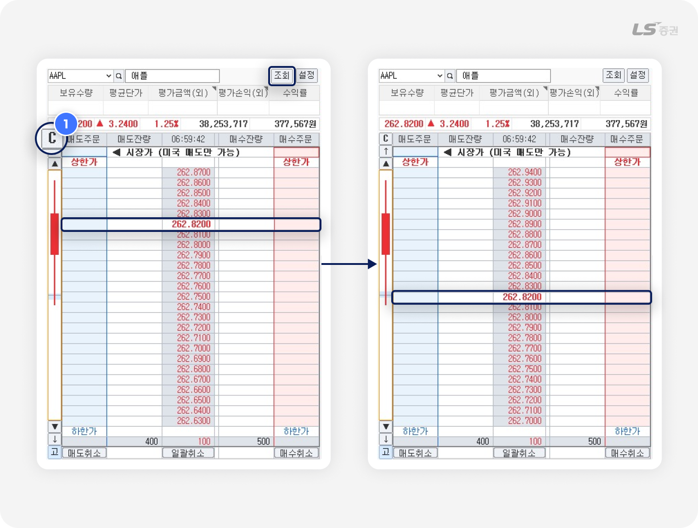
-
1
호가 정렬 버튼
- 호가창에 표시되는 호가 범위가 주요 거래 범위를 많이 벗어난 경우, 현재가가 중앙에 위치하고 매도호가, 매수호가가 상하 균형을 맞춰 표시되도록 정렬할 수 있습니다.
- ‘조회’ 버튼으로도 모든 정보를 다시 조회하며 호가 정렬 효과를 얻을 수 있습니다.
호가 단위 이동 기능
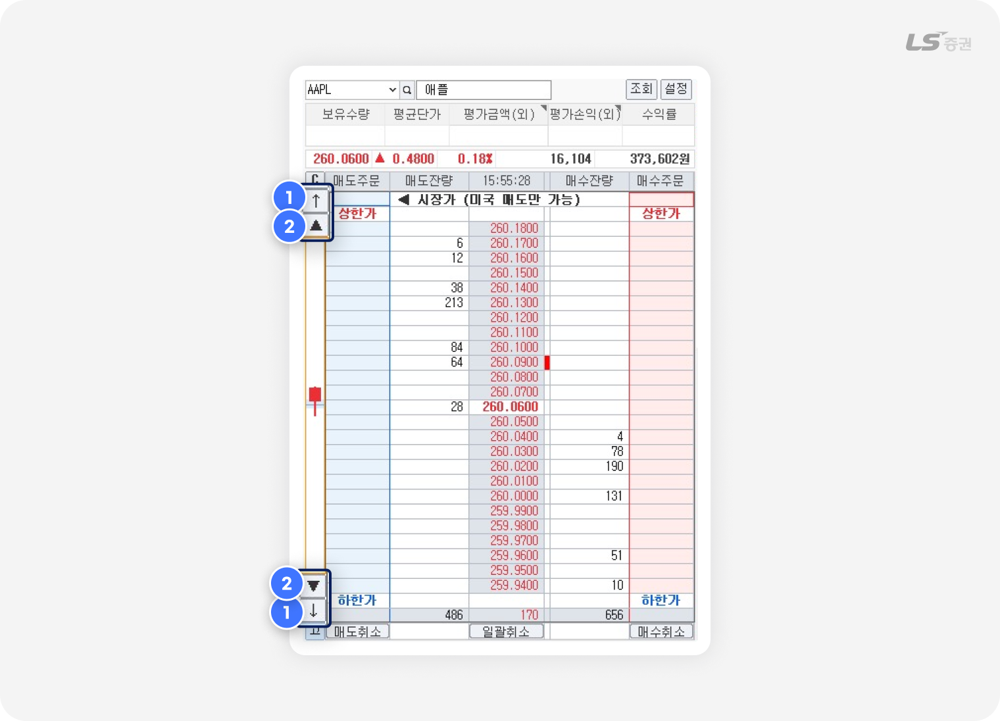
-
1
5호가 단위 이동 기능
- ↑ 버튼 클릭 시 매도호가, ↓ 버튼 클릭 시 매수호가가 5개 단위로 추가 표시됩니다.
-
2
1호가 단위 이동 기능
- ▲ 버튼 클릭 시 매도호가, ▼ 버튼 클릭 시 매수호가가 1개 단위로 추가 표시됩니다.
호가 고정 기능
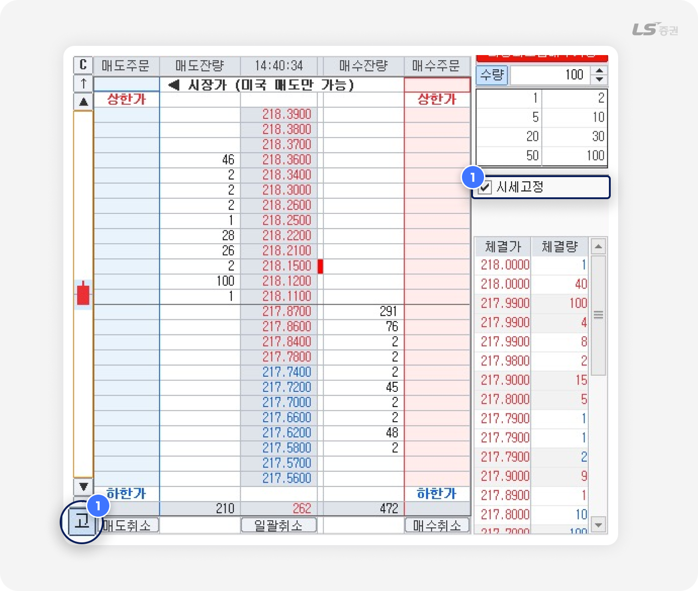
-
1
호가 고정
-
‘시세고정’에 체크하거나 화면 좌하단 ‘고‘ 버튼을 클릭하면 호가가 고정됩니다.
호가를 고정하면 매도호가와 매수호가가 일정하게 고정되며 호가 위치가 변동되지 않습니다.
-
‘시세고정’에 체크하거나 화면 좌하단 ‘고‘ 버튼을 클릭하면 호가가 고정됩니다.
주의하세요!
- 호가 고정 기능을 사용할 경우 호가가격의 위치가 변동하게 되므로, 가격이 급변하는 종목에서는 예상과 다른 가격에 주문이 체결될 수 있습니다. 주문 접수 전 실제 주문가격을 반드시 확인해 주세요.
빠른호가주문 설정
화면 표시 방법이나 주문 방법을 편의에 맞게 설정할 수 있습니다.
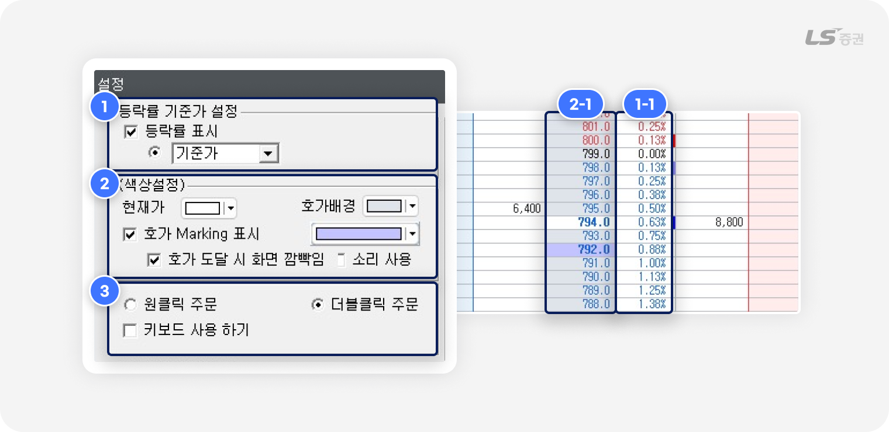
-
1
등락률 기준가 설정
- 등락률 표시: 호가창에서 '등락률' 항목 표시 여부와 대비 기준을 설정할 수 있습니다.
-
2
색상 설정
- 현재가, 호가배경 : 호가창 내 해당 항목의 색상을 설정할 수 있습니다.
-
호가 Marking 표시 :
최대 5개까지 호가 클릭 시 해당 호가에 지정 색상을 표시합니다.
또 마킹한 호가에 도달 시 화면 깜박임 효과나 소리로 알려주는 옵션을 추가로 설정할 수 있습니다.
-
3
주문 설정
-
원클릭 주문 / 더블클릭 주문 :
호가창을 통한 클릭 주문 방법을 설정할 수 있습니다.
원클릭은 한 번 클릭, 더블클릭은 빠르게 두 번 클릭합니다. -
키보드 사용하기 :
일반 주문 및 일괄 주문을 빠르게 접수할 수 있도록 키보드 단축키 사용 여부를 설정할 수 있습니다.
-
키보드 단축키 사용 안내
- 매수주문 : Enter
- 매도주문 : Enter
- 일괄매도 : Ctrl + Enter
- 정정주문 : Shift + 선택 → 정정 호가 우측의 주문 수량으로 드래그 → Shift + Enter
- 취소주문 : Delete
- 전량취소 : Shift + Delete
- 매수/매도 전량취소 : Ctrl + Delete
- 매도가능수량 설정 : Ctrl + Q
- 거래국가 통화 매수가능수량 설정 : Ctrl + W
- 타통화 포함 매수가능수량 설정 : Ctrl + A
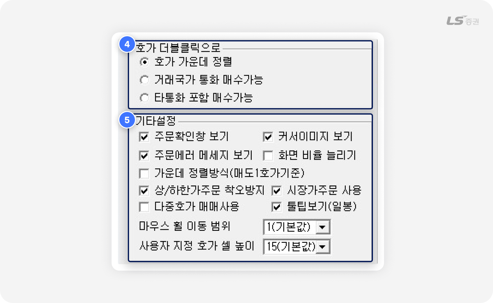
-
4
호가 더블클릭 설정
- 호가 더블클릭 시 실행되는 기능을 선택할 수 있습니다.
-
5
기타 설정
- 주문확인창 보기 : 매수/매도 주문 접수 전 확인창 표시 여부를 설정할 수 있습니다.
- 커서이미지 보기 : 호가에 마우스를 올렸을 때 테두리로 해당 호가를 강조 표시합니다.
- 주문에러 메세지 보기 : 주문 거부 시 사유에 대한 팝업이 표시됩니다.
-
화면 비율 늘리기 :
체크 시 상하비율을 조정할 수 있습니다. 해제 시에는 상하로 매도/매수 호가 수를 늘릴 수 있습니다.
-
가운데 정렬방식(매도1호가기준) :
호가 정렬 시 가운데 호가 위치를 매도1호가 기준으로 정렬합니다.
- 상/하한가주문 착오방지 : 상/하한가 주문 접수 시 실수 방지를 위한 확인창을 표시합니다.
- 시장가주문 사용 : 호가창 좌상단을 클릭하는 시장가 주문 사용 여부를 설정합니다.
-
다중호가 매매사용 :
1회 주문 시 선택한 호가부터 미리 설정된 2개 이상의 연속한 호가에 일괄적으로 수량 또는 금액을 적용하여 자동으로 주문을 접수하는 기능을 설정합니다.
매수 시 하단 호가로, 매도 시 상단 호가로 틱 단위로 이동하며, 설정한 호가수만큼 일괄적으로 주문이 접수됩니다.
예) 개수2, 틱1 설정하고, 호가 275의 주문영역을 더블클릭 시 2개의 호가에 1틱 간격으로 (275, 274) 주문이 접수됩니다. -
툴팁보기(일봉) :
화면 좌측 일봉 차트에 커서를 올렸을 때 시가, 고가, 저가, 현재가 등 시세 툴팁 표시 여부를 설정할 수 있습니다.
-
마우스 휠 이동 범위 :
호가창에서 마우스 휠 상하 이동 시 한 번에 움직이는 호가 단위를 설정할 수 있습니다.
기본값은 '1'로 휠 한 번에 1호가씩 이동하며, '2'로 설정 시 휠 한 번에 2호가씩 이동합니다. - 사용자 지정 호가 셀 높이 : 호가 단위별 높이를 조정할 수 있습니다. 기본값은 '15' 입니다.
해외주식 주문 설정 기능
‘편리한기능 - 설정 - 주문설정 - 해외주식 탭’에서 해외주식 주문 상세 설정을 할 수 있습니다.
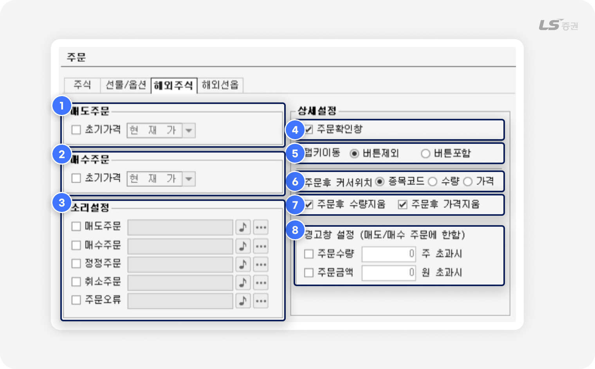
-
1
- 매도주문 초기가격 : 체크 시 매도 주문화면에서 주문가격에 초기 설정 가격이 자동 입력됩니다.
-
2
- 매수주문 초기가격 : 체크 시 매수 주문화면에서 주문가격에 초기 설정 가격이 자동 입력됩니다.
-
3
- 주문 접수가 완료되거나 주문 오류 발생 시 소리로 알려주는 알림음을 설정할 수 있습니다.
-
4
- 주문확인창 : 체크 시 착오주문 방지를 위해 주문 실행 전 확인창을 표시합니다.
-
5
- 탭 키로 이동할 때 '거래국가 통화 가능수량' '타통화+원화가능수량' 등 주문수량을 지정하는 버튼의 포함 여부를 선택합니다.
-
6
- 주문후 커서위치 : 주문 후 커서가 이동할 곳을 지정합니다.
-
7
-
주문후 수량 / 가격지움 :
체크 후 주문 시 입력한 수량 또는 가격을 주문 실행 후 유지하지 않고 삭제합니다.
-
-
8
- 매수/매도 주문 시 설정한 조건에 부합할 경우 주문 전 경고창을 표시해 주문 실수를 방지하도록 도와줍니다.
글로벌 시장의 흐름은 기다려주지 않습니다.
[5663] 해외주식 빠른호가주문 화면은 복잡한 환율과 시차 속에서도 신속하고 정확한 주문을 가능하게 합니다.
세계의 시세를 실시간으로 읽고, 한 발 앞선 거래를 경험해 보시기 바랍니다.
감사합니다!